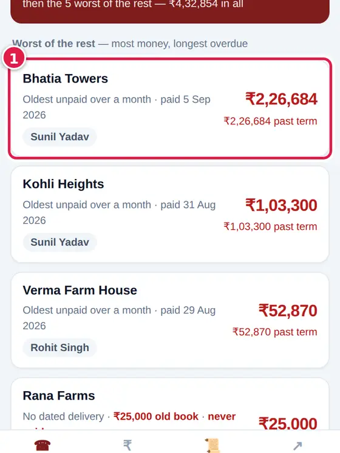
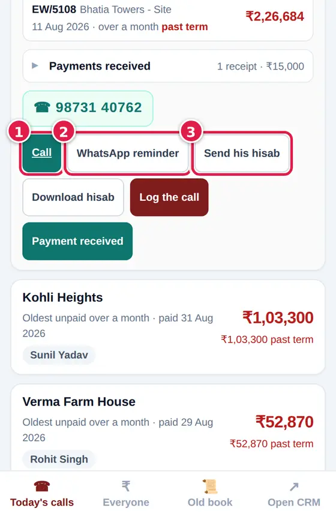
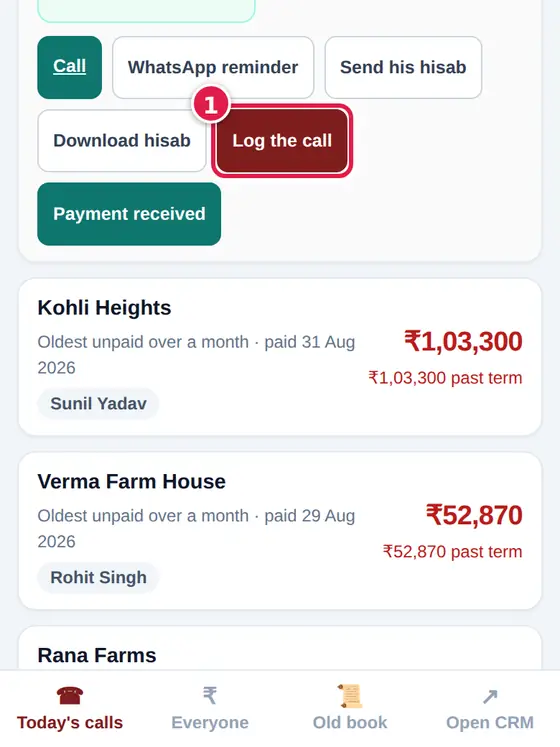
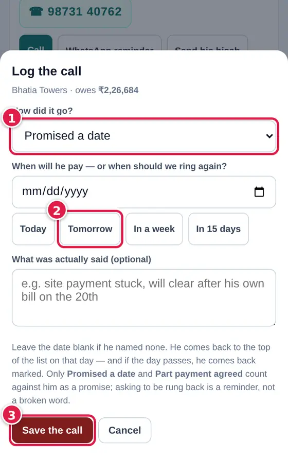
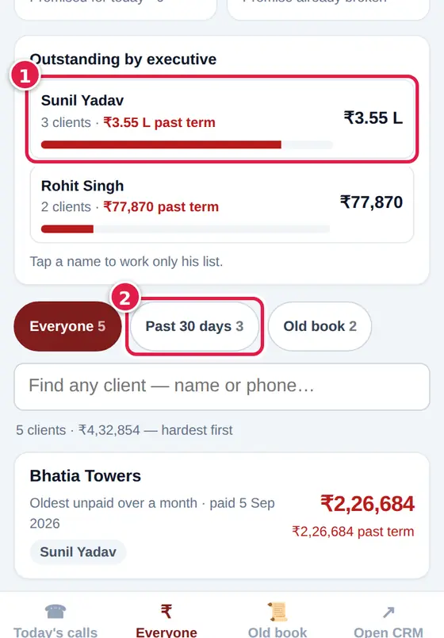
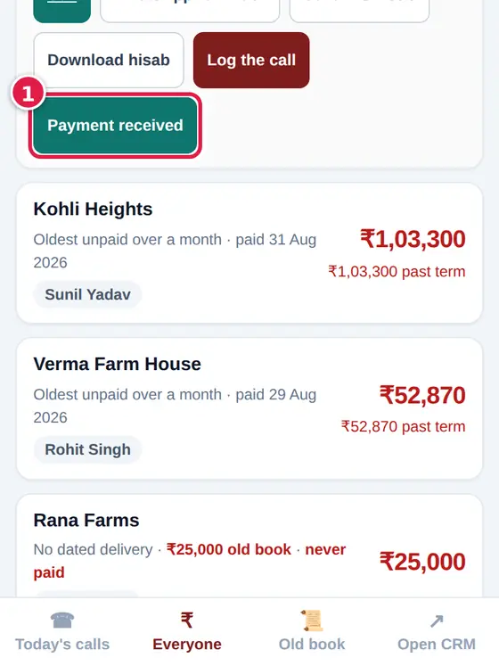
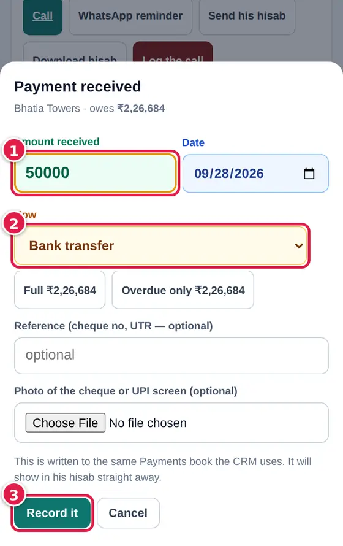

The day's list: first everyone who promised to pay today, then the worst of the rest - most money, longest overdue. Work it top to bottom.
Ring a client
Tap a client to open his card.

His card shows what he owes, delivery by delivery. Tap Call to ring him. WhatsApp reminder sends a polite message; Send his hisab sends his full statement.

Write down what he said
After the call tap Log the call.

Pick how it went - Promised a date, Asked to call back, No answer, Disputes the amount, Refused, Part payment agreed - and when to ring again. Tap Save the call.

He comes back to the top of the list on the day you set. If he promised and the day passes, he comes back marked.
Everyone who owes, hardest first, with the total per executive.
Narrow it
Tap an executive's name to work only his list, or the chips Everyone, Past 30 days, Old book.

Record a payment
Open the client and tap Payment received.

Type the Amount received (or tap Full / Overdue only), the date and How it came. Add the cheque number or UTR and a photo of the cheque or UPI screen if you have it. Tap Record it.

It goes into the same payments book as the CRM and shows on his HISAB at once.